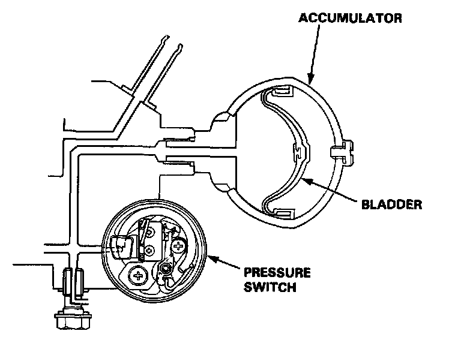

Brake Fluid Accumulator: Description and Operation

Features/Construction/Operation
Accumulator
The accumulator is a pneumatic type which accumulates high-pressure brake fluid fed from the pump incorporated in the pump assembly. When the anti-lock brake system operates, the accumulator and the pump supply high-pressure brake fluid to the modulator valve via the inlet side of the solenoid valve.